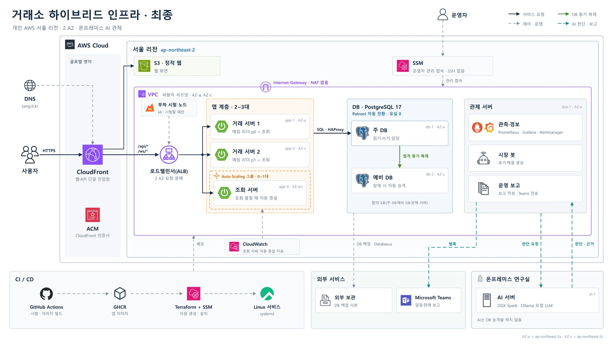
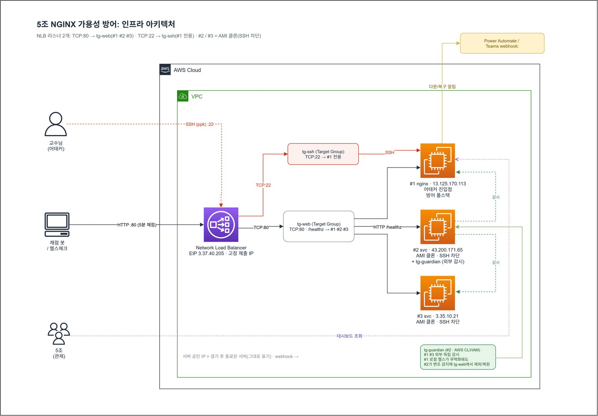
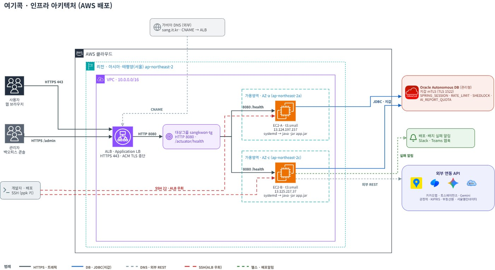

이상혁Lee Sang Hyeok
System · Infra Engineer · 백엔드 개발도 합니다
Linux 서버와 AWS를 구성한 뒤 장애를 내서 복구되는지 확인합니다. 개인 AWS에서 주 DB 전원을 끊었을 때 예비 DB가 23.0초 만에 승격됐고, 차단 4초 전까지 1분 동안 커밋된 주문 196건 중 사라진 주문은 없었습니다. CTF에서는 3인 팀 조장을 맡았고, root 권한 공격자가 들어오는 서버로 사흘 동안 채점 기준 다운 0회를 기록했습니다.
작업하면서 실행한 명령과 결과는 아래 기록에 정리하고 있습니다.
주요 프로젝트
거래 서버와 DB를 두 가용 영역에 나눠 배치했습니다. 주 DB 전원을 끊자 예비 DB가 23.0초 만에 승격했고, 차단 4초 전까지 1분 동안 커밋된 주문 196건도 모두 새 주 DB에 남아 있었습니다.
AWSPatroniLinuxfailstop · 1인 · 2026.07–10

공격자가 root로 들어오는 서버에 nginx를 다시 띄우는 장치를 다섯 가지 두었습니다. 페이지가 오염된 서버는 헬스체크에 실패해 NLB에서 빠집니다. 사흘 동안 채점 기준 다운은 0회였습니다.
LinuxsystemdAWS NLBkeep-nginx-alive · 3인 팀 조장 · 2026.05

서로 다른 가용 영역의 EC2 두 대를 ALB 뒤에 두고 한 대씩 교체하도록 배포했습니다. 세션, 스케줄러, 요청 제한 상태는 DB에서 함께 씁니다.
AWS ALBEC2Oraclesangkwon-platform-poly · 4인 팀 팀장 · 2026.07

전체 작업
- 2026
- 2026
- 2026
- 2026
- 2026
- 2025
- 2025
하모니 — 합주 토스 미니앱, 출시 전 보안 문제 해결 2026DevHub — 개발자 커뮤니티, 끝난 뒤 보안과 포인트 로직 수정 2024- 2026
소개
처음에는 웹 서비스 기능을 만드는 백엔드 프로젝트를 주로 했습니다. 만든 서비스를 배포하고 나니 서버가 죽거나 요청이 몰릴 때 어떻게 되는지 볼 일이 많아졌습니다. 지금은 Linux 서버와 AWS를 설정하고, 장애를 내서 복구되는지 확인하는 작업을 합니다.
- 서버 운영
- Linux · systemd · nftables · Docker · Nginx · HAProxy
- 클라우드
- AWS EC2 · ALB · Auto Scaling · CloudFront · SSM · S3
- 관제·자동화
- Prometheus · Grafana · Alertmanager · GitHub Actions
- 데이터
- PostgreSQL · Patroni · Oracle · Redis
- 개발
- Java · Spring Boot · Python · FastAPI · TypeScript
- 학력
- 인하공업전문대학교 정보통신공학과 학사(전공심화) 2026.02
- 교육
- 한국폴리텍대학 광명융합기술교육원 하이테크과정 데이터분석과(2026.03–12 수료 예정)
인천일보아카데미 Java·Python 웹서비스 개발자 과정(2024) · 빅데이터 데이터사이언티스트 과정(2024–2025)
- 자격
- 정보처리기사 2026.09 · 네트워크관리사 2급 2024.10
- 수상
- 프로젝트작품 경진대회 은상, 한국폴리텍대학 광명융합기술교육원 2026.10
성적우수상(전체 교육기간 성적 1위), 인하공업전문대학교 2026.02